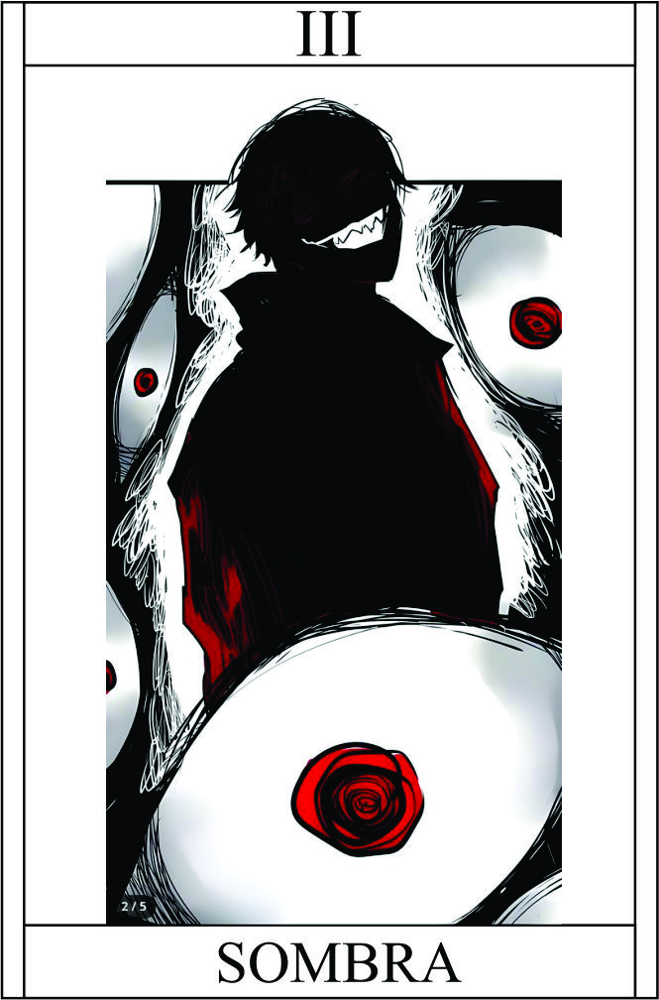

Espirito
Têndencia: Neutro Mal
Passiva - Aura Sombria:
A passiva "Aura Sombria" envolve o personagem com uma energia sombria, aumentando sua afinidade e controle sobre as sombras. Essa aura confere benefícios adicionais ao utilizar habilidades relacionadas às sombras.
Legado 1 - Olhos da Escuridão
Ao ativar a habilidade "Olhos da Escuridão", o personagem tem a capacidade de enxergar através das sombras, permitindo uma visão aprimorada mesmo em condições de baixa luminosidade. Isso possibilita detectar inimigos ocultos nas sombras e obter informações valiosas sobre o ambiente.
+2 Perceção | Não é pego desprevinido
O personagem precisa estar em um ambiente escuro ou com pouca iluminação.
Legado 2 - Sussurros Sombrios
O personagem precisa estar em um ambiente com sombras densas ou em um confronto próximo com um inimigo.
Se falha no teste perde a vez
Condição para ativar a habilidade:
O personagem precisa estar em um ambiente escuro ou com pouca visibilidade.
Legado 3 - Viagem nas Sombras:
Ao ativar a habilidade "Viagem nas Sombras", o personagem se transforma em uma sombra alongada e escura, permitindo-lhe deslizar através de superfícies e se mover rapidamente. Essa habilidade proporciona agilidade e mobilidade, permitindo ao personagem alcançar rapidamente seus alvos ou escapar de situações perigosas.
As habilidades "Olhos da Escuridão", "Sussurros Sombrios" e "Viagem nas Sombras" exploram a manipulação das sombras e a capacidade de transformação do personagem. A passiva "Aura Sombria" potencializa essas habilidades, concedendo vantagens e aprimoramentos adicionais. As condições para ativar as habilidades garantem que o personagem esteja em situações adequadas e aproveite ao máximo seu poder sombrio.
+2 Esquiva | +2 passos
Restrição de uso:
O personagem precisa estar em um ambiente com sombras presentes e visíveis.